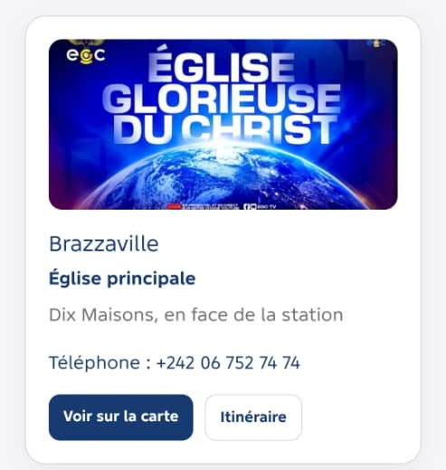
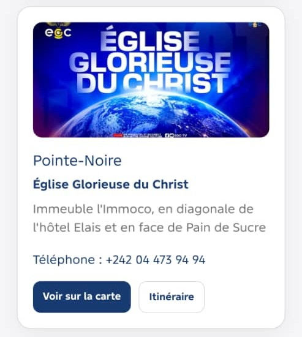
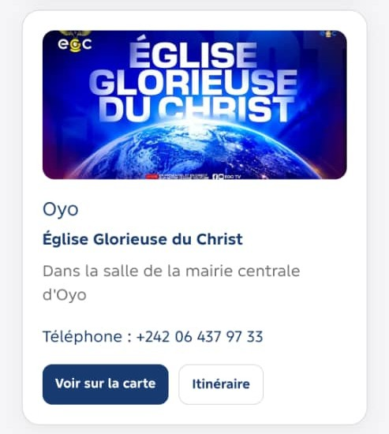
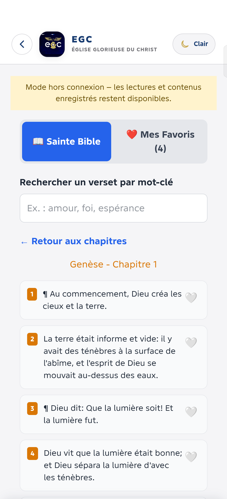

Application Android et parcours web — campagne du 12 novembre 2026
Consigner les résultats observés sur Android et sur le site, notamment l'accès à la Bible hors ligne, l'état du module Live, les fiches « Trouver mon église » et l'ouverture des itinéraires. Les tests non exécutés sont explicitement séparés des réussites.
Essais fonctionnels non destructifs sur le téléphone et navigation du site en production. Les parcours pouvant enregistrer des données, envoyer un message ou déclencher un paiement n'ont pas été exécutés sans environnement de test autorisé.
Testeur et responsable de validation : à renseigner avant transmission.
| ID | Scénario | Résultat observé | Statut |
|---|---|---|---|
| W-01 | Navigation de 21 routes web | À 390 × 844, 21 réponses HTTP 200; pas d'erreur JavaScript de page ni de débordement horizontal constaté. Certains écrans paresseux nécessitent une attente. | Réussi |
| W-02 | Événements | Filtre « Culte » et détail d'événement (date, lieu, heure) affichés. | Réussi |
| W-03 | Thème | Passage clair/sombre puis retour au thème clair. | Réussi |
| W-04 | Plan personnalisé | Sélection du thème « Guérison » affichée; aucune progression n'a été enregistrée. | Réussi, portée limitée |
| A-01 | Lancement et plein écran | Application lancée sur TECNO CN5c; affichage plein écran observé. | Réussi |
| A-02 | Bible hors ligne | Après coupure temporaire du Wi-Fi et des données mobiles du téléphone, bannière hors ligne visible et Genèse 1 consultable; réseau rétabli ensuite. | Réussi |
| A-03 | Live sans direct actif | État « Aucun direct n'est en cours » et prédications archivées visibles le 12 novembre. | Réussi |
| A-04 | Fiches de localisation v1.3 | Brazzaville, Pointe-Noire et Oyo affichent les repères et numéros de téléphone. | Réussi |
| A-05 | Liens d'itinéraire | Google Maps s'ouvre pour les trois fiches. Pointe-Noire résout vers l'hôtel Elais, repère de l'adresse; l'emplacement exact de l'église n'est pas confirmé indépendamment. | Partiel |
| A-06 | Capture historique de direct | La capture du 8 novembre indique « Direct en cours » et montre le lecteur, mais ne prouve ni lecture effective ni comportement de la version 1.3. | Partiel |
| A-07 | Plan et historique | Écrans consultés; enregistrement d'une progression et persistance de l'historique non vérifiés. | Partiel |
| A-08 | Rappels | Écran consulté; permission et programmation d'une notification non vérifiées. | Partiel |
| A-09 | Installation fraîche | Non exécutée; seul le parcours de mise à jour par-dessus la version déjà installée a été observé. | Non exécuté |
| A-10 | Lecture d'un direct v1.3 | Aucun direct actif n'était disponible pendant l'essai du 12 novembre. | Non exécuté |
| A-11 | Parcours avec effets réels | Connexion à l'administration, envoi WhatsApp et paiement/don non exécutés. | Non exécuté |
Comptage des scénarios fonctionnels agrégés : 8 réussis, 4 partiels et 3 non exécutés. Les contrôles techniques sont détaillés à la page suivante et ne sont pas inclus dans ce comptage.
Paquet : com.egc.eglise · Version : 1.3 (4) · Min SDK : 24 · Target SDK : 36.
APK publié : 63 711 375 octets; signature vérifiée. SHA-256 : 421AC3CBA21AE31E32EFBEB0B1C35D14F655E72A80879FDB974F760F38B2439F
Téléchargement : https://egliseglorieuseduchrist.up.railway.app/app-egc.apk
Limites observées : certaines rubriques web affichent « Bientôt disponible » ou un contenu à venir. Les interactions d'écriture n'ont pas été validées. Le résultat de Maps à Pointe-Noire est cohérent avec le repère fourni, mais ne prouve pas l'adresse exacte de l'église.
Signature testeur : ____________________ Validation responsable : ____________________ Date : __________
Captures Android reçues le 12 novembre 2026. Les trois fiches et leurs repères sont visibles; les numéros affichés sont les coordonnées publiques des églises.



Les extraits ci-dessous montrent uniquement le libellé de destination dans Google Maps. Le départ et la carte ont été omis pour protéger la position de l'utilisateur.
Les itinéraires ont été ouverts; ces extraits ne permettent pas de valider la précision du trajet ni le point exact de l'église à Pointe-Noire.

La capture historique du 8 novembre indique « Direct en cours », mais ne prouve ni lecture effective ni version 1.3.